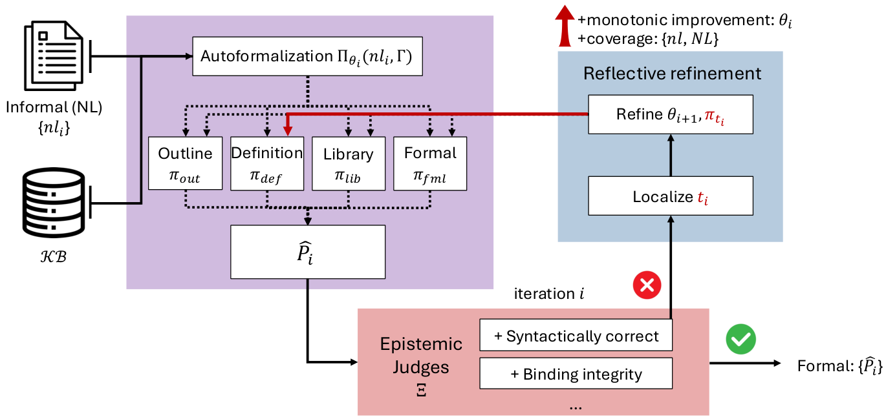
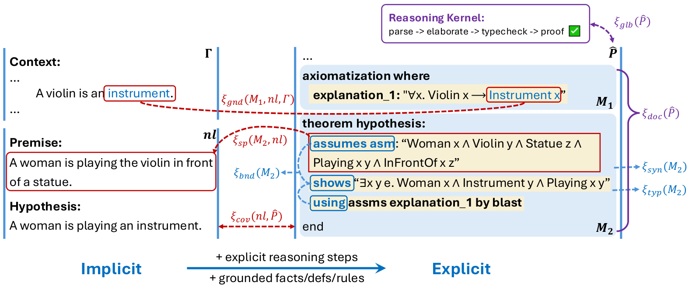

Autoformalization outputs for miniF2F and ProofNet are elaborated in the Lean 4 kernel, with symbol grounding checked against Mathlib, to drive a per-axis refinement loop.
Abstract
Complex reasoning tasks increasingly require systems to produce outputs whose correctness cannot be judged by exact match against a single reference. Autoformalization (AF) is a representative example; it asks a model to translate informal mathematical or logical reasoning into a formally checkable object, yet expert-validated formalizations do not scale beyond toy cases and a single informal argument can admit many valid formal renderings. Progress therefore depends on whether partial, structured proxies can substitute for exact references. We introduce a reference-free proxy-judge framework for AF that replaces gold-standard matching with a vector of per-axis property checks. The framework organizes the proxy along three structural scopes that cover global properties of the elicited object, per-module properties internal to its sub-components, and cross-domain properties that re-align it to the informal source, and aggregates each axis into a verdict vector. The vector drives a reflective refinement loop in which a violated coordinate routes the controller to a matching repair target, so each iteration changes only what is judged wrong. Under bounded judge noise, the expected intrinsic gap contracts geometrically to a noise-dependent plateau. Across seven formalization backbones on miniF2F, ProofNet, e-SNLI, and ProntoQA, refinement consistently lifts Pass Rate over the single-shot ICL baseline, and the per-axis proxy outperforms a matched scalar proxy on benchmarks where the baseline has room to improve. Structured proxy judgments therefore provide both a practical refinement signal and a theoretical handle on convergence when exact references are unavailable.
Problem
Autoformalization lacks scalable gold-standard references, and a single informal argument admits many valid formalizations. Exact-match evaluation therefore penalizes correct alternatives and merges distinct error types into one score.
Approach
A reference-free proxy-judge framework evaluates a candidate formalization with eight per-axis judges. The judges are grouped into global, per-module, and cross-domain scopes, and the kernel-decidable axes are checked by Lean 4 or Isabelle/HOL. A reflective refinement loop sends each violated axis to a matching repair target. Under bounded judge noise, the expected intrinsic gap is proven to contract geometrically to a noise-dependent plateau.

Figure 1: Reflective Refinement Loop. At each iteration the system proposes a candidate formalization, scores it on a fixed set of property axes, finds the worst-scoring axis, and applies a repair targeted to that axis.

Figure 2: Implicit-to-Explicit Transition. Correctness is checked at three scopes: the whole object, each module, and the alignment back to the informal source nl and context \Gamma . Each scope has its own judge.
Results
Across seven backbones on miniF2F and ProofNet (Lean 4) and on e-SNLI and ProntoQA (Isabelle), refinement raises Pass Rate over a single-shot ICL baseline. The per-axis proxy beats a matched scalar proxy where the baseline is below saturation, notably ProofNet and e-SNLI.